Every version,
and what it changed.
ForgeAI is built in the open and ships often. Each stage below is a real release with a screenshot of the thing that changed. Where something is unfinished, it says so.
Reminders, memory, and the live web
Reminders
“Remind me at 7pm to call Matthew”, “every Friday at 9am”, “in two hours”. Native notifications, recurring schedules, snooze. A reminder that falls due while the app is shut arrives at the next launch marked late — nothing can wake a machine that is off, and the page says so.
Memory
Facts ForgeAI carries between conversations, stored on your computer. The model can suggest one in chat; only you save it. Pin, edit, forget, export and import — and the pinned ones plus the most recent go into each prompt, not the whole list.
Live web research
Connect Perplexity or Firecrawl with your own key and the model can ask for a lookup mid-answer. The result arrives with sources, dates and a fetch time, kept visually distinct from what the model already knew.
Keys stay encrypted
API keys go into the operating system’s own key store. If that is unavailable, ForgeAI refuses to save the key rather than writing it in plain text. A connection only reads Connected after a real authenticated call succeeds.
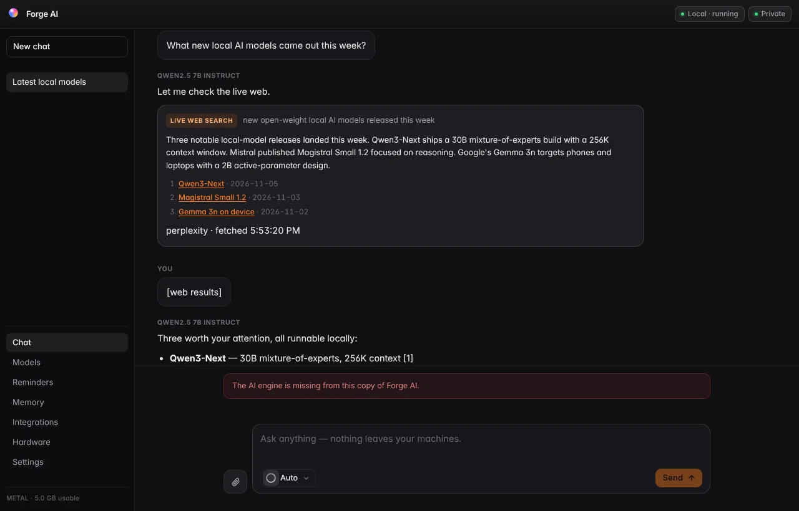
A live web search running inside an answer, with its sources listed.
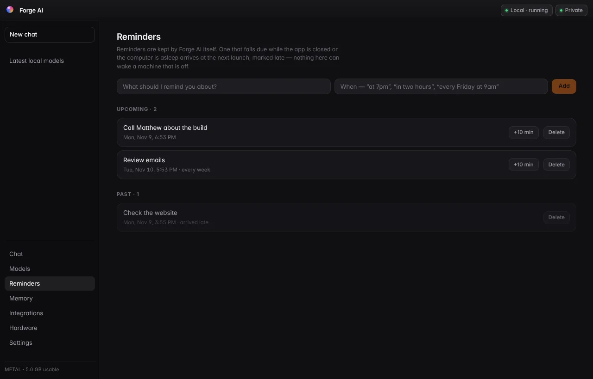
The reminders page, with a recurring weekly reminder and one that arrived late.
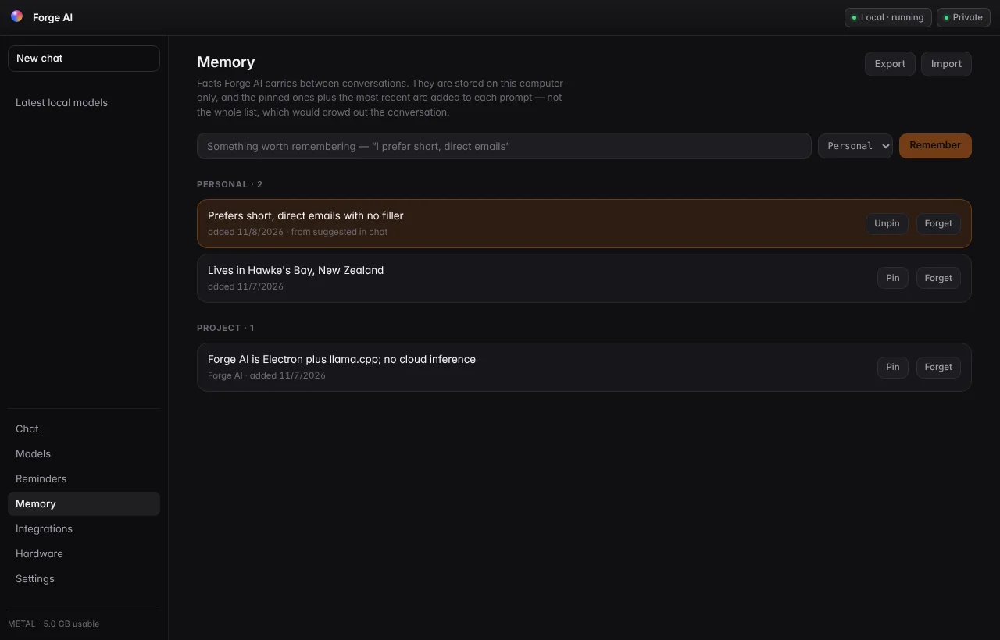
Memory, with a pinned preference suggested in chat and a project fact.
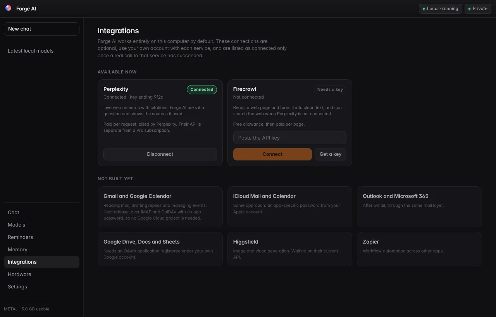
Integrations: what is connected, and an honest list of what is not built yet.
Updates itself, reads your files, and times every answer
Built-in updater
Forge AI checks its own releases page, shows what changed, and installs the new version in place. One application that keeps updating — no more downloading a replacement.
Attachments
Drag in a PDF, Word document, spreadsheet, slide deck, CSV or source file and ask about it. The text is pulled out and handed to the model; a file it cannot read says so instead of pretending.
Response timing
Every answer carries the total time from pressing Send. Expand it for model loading time, time to first token, tokens generated and output speed — all measured, none estimated.
New identity
The orb artwork now runs through the app, the icon and this site.
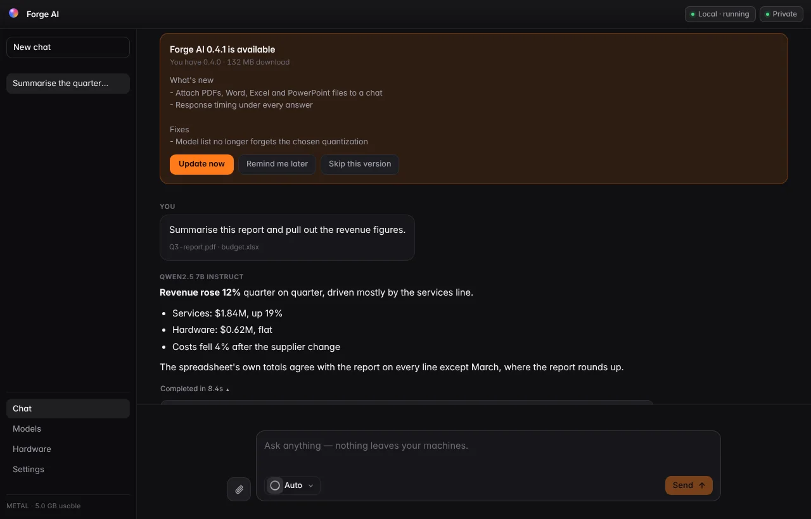
An answer about two attached documents, with the update notice above it and the measured timings expanded underneath.
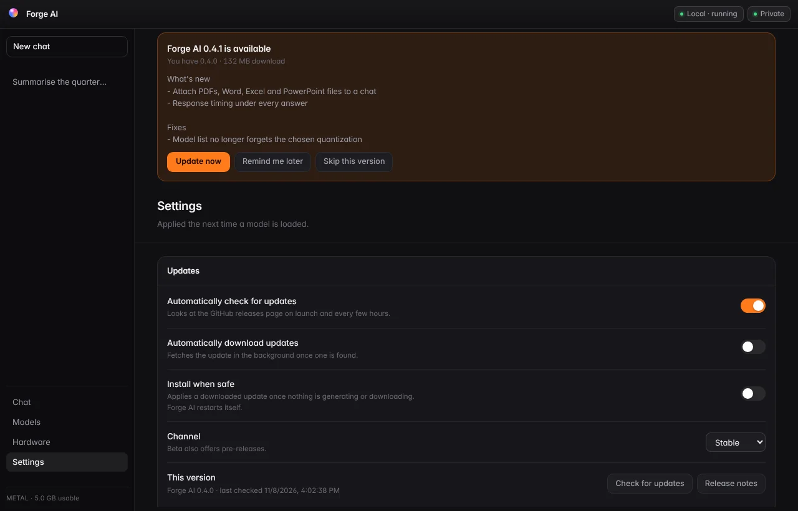
Update settings: check, download and install separately, with a stable or beta channel.
Every GGUF model on Hugging Face
Search the whole hub
Not a fixed list. Search every repository that publishes GGUF files, sorted by downloads, likes, trending or recency.
Pick the exact file
Open a repository to see each quantization with its real size, and whether it fits the memory you actually have.
Family marks
Fifteen marks, one per maker, drawn for ForgeAI rather than borrowed from the model makers.
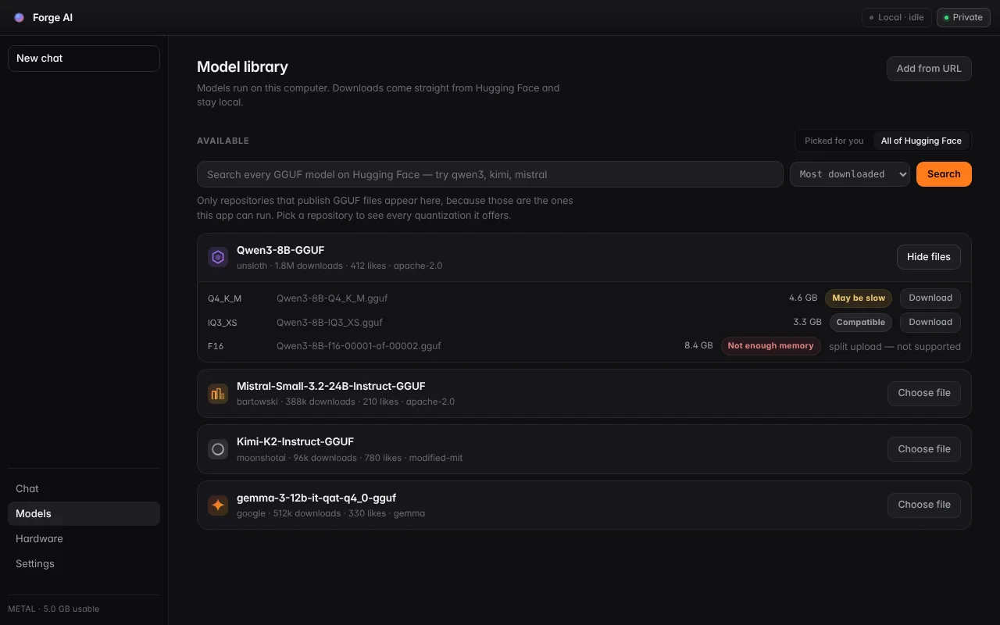
Searching Hugging Face from inside the app and expanding a repository to choose a quantization.
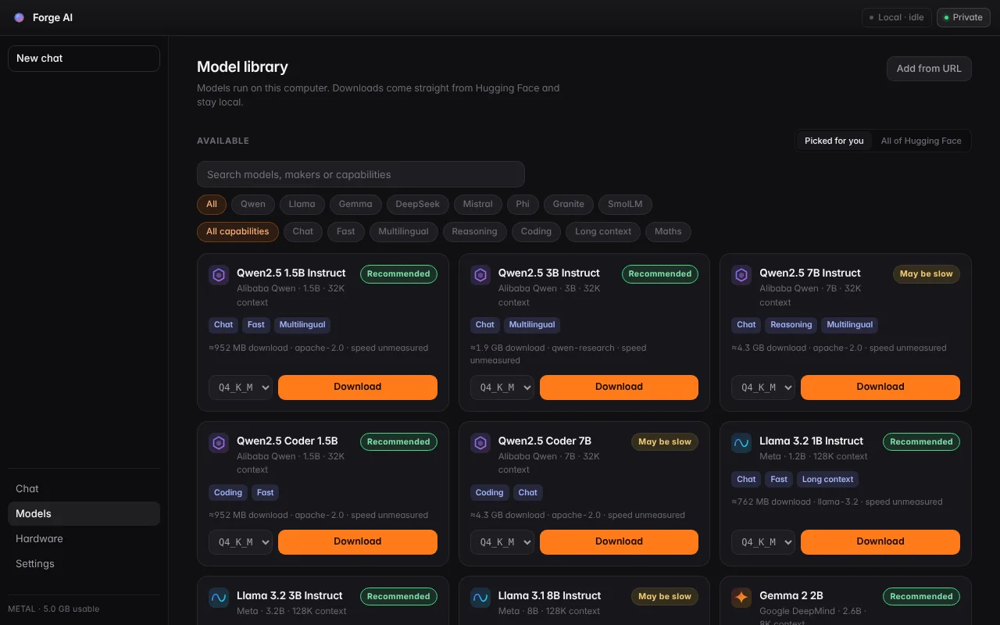
The curated library, with capability tags and memory-fit labels from detected hardware.
Live previews, interactive answers and conversation history
Live web previews
Ask for a page and it renders inside the app, sandboxed: preview, code or split, three device widths, open in a browser, export.
Interactive answers
The model can ask a question with real checkboxes, sliders and dropdowns. Your selections go back into the conversation and shape the next answer.
Emails with copy buttons
Recipients, subject and body each get their own button, because they go into different boxes.
Automatic model loading
Sending a message loads the model if it is not already running. The Load button is gone.
Auto model selection
Picks among the models you have installed based on what you asked for, and says which it chose and why.
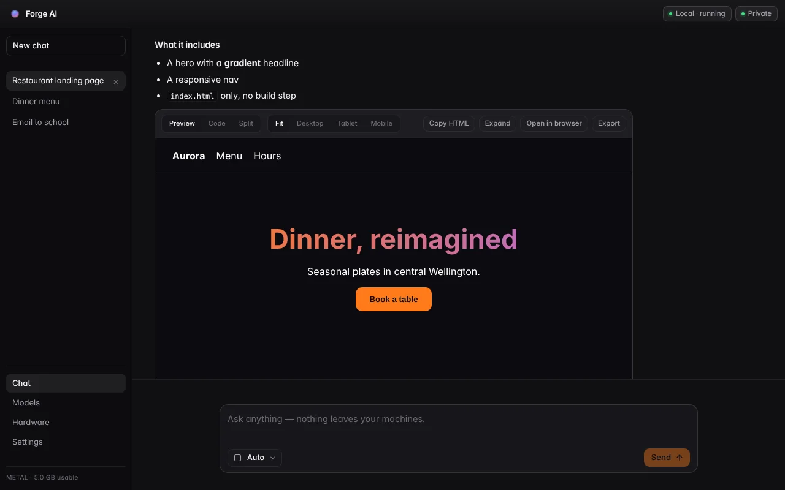
A generated restaurant page running live inside the chat.
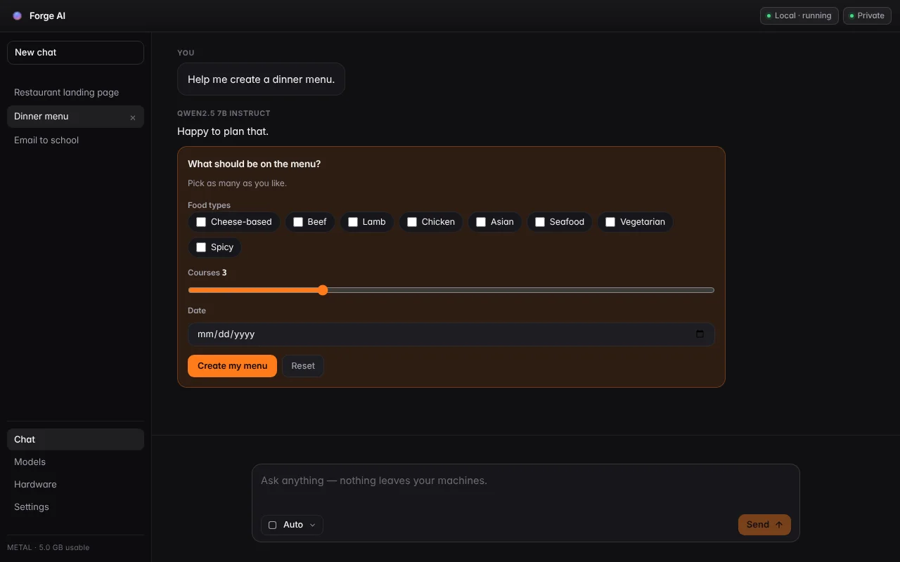
The model asking which foods to include, with working checkboxes and a slider.
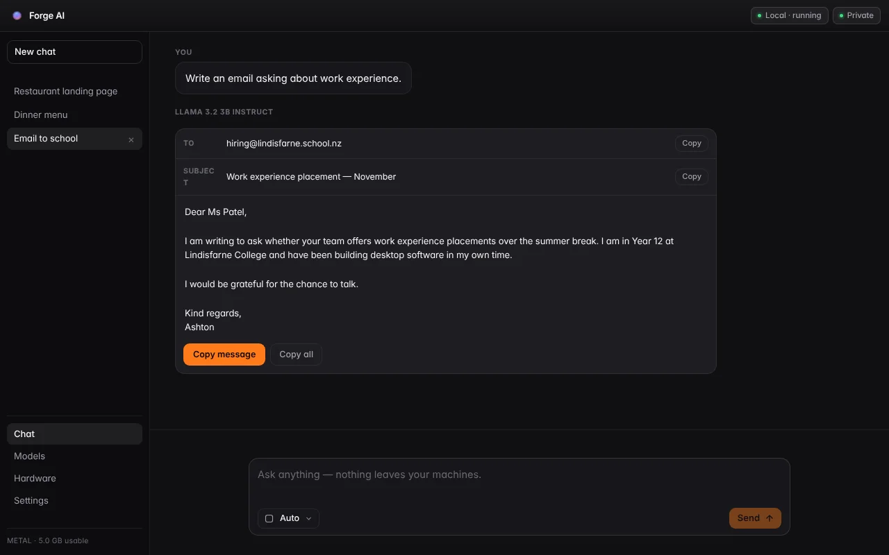
A drafted email with separate copy buttons for recipients, subject and message.
The first working build
Local inference
llama.cpp bundled inside the app: Metal on Apple Silicon, processor on Windows. Nothing is sent anywhere.
Model downloads
Resumable, checksum-verified, with a disk-space check before they start.
Hardware detection
Memory is measured, and model sizes are judged against it rather than guessed.
What is not finished.
These are named here rather than hinted at in a feature list.
Clustering
Connecting several computers into one private pool is designed and partly written — the placement planner and its tests are in the repository — but no work is distributed yet, and the feature ships switched off.
Reading images
Images can be attached and previewed, but the engine in this build is text-only, so it will tell you it cannot read them rather than guess.
Scanned documents
A PDF with no text layer is recognised as a scan and reported as one. There is no OCR in this build.
Signing
Neither build is code-signed, so macOS and Windows each warn you once on first launch. Certificates cost money every year; this is free.
Windows graphics
The Windows build runs on the processor. GPU acceleration there is not wired up yet, so it is slower than the Mac build on the same model.
Interactive answers depend on the model
A small model will mostly ignore the interactive format. Seven-billion-parameter instruction models use it well. That is the model's doing, not the app's.